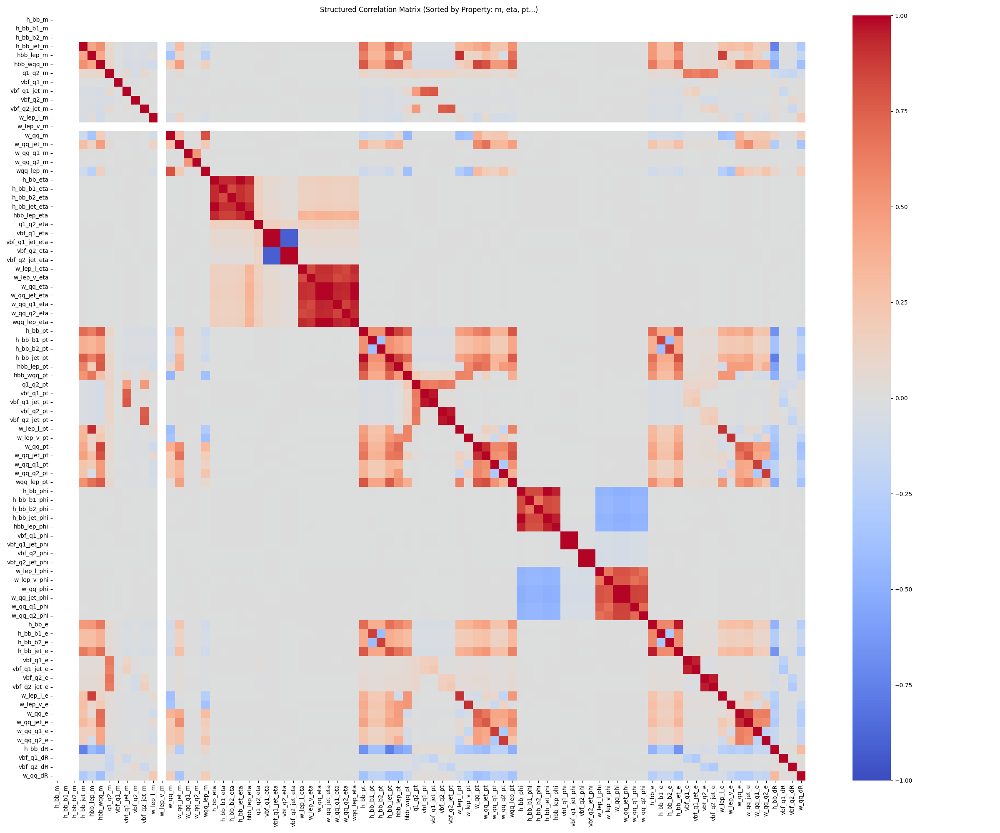
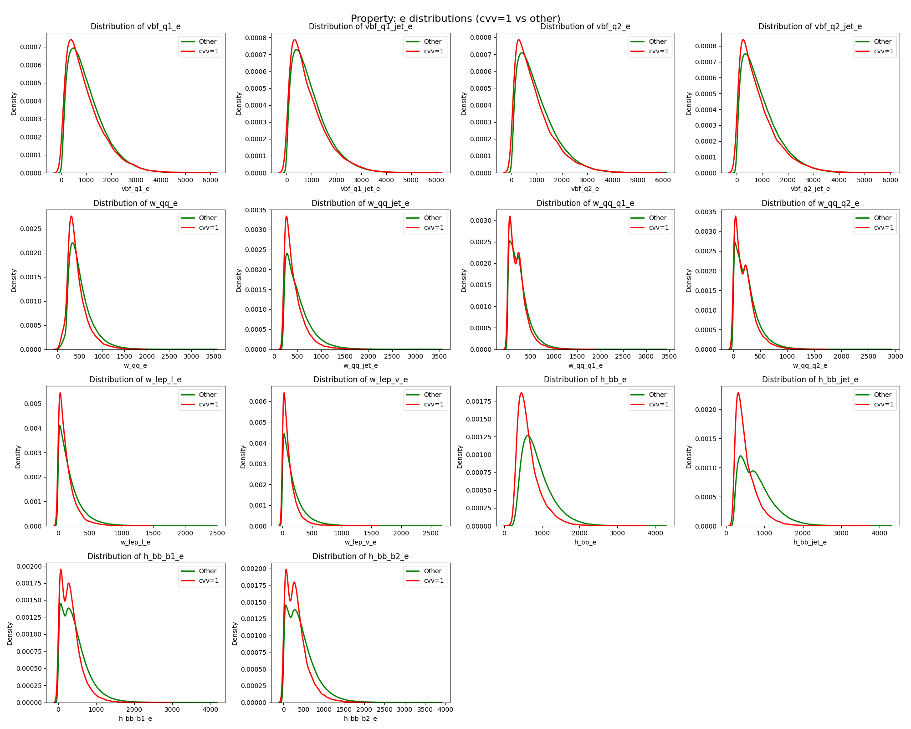
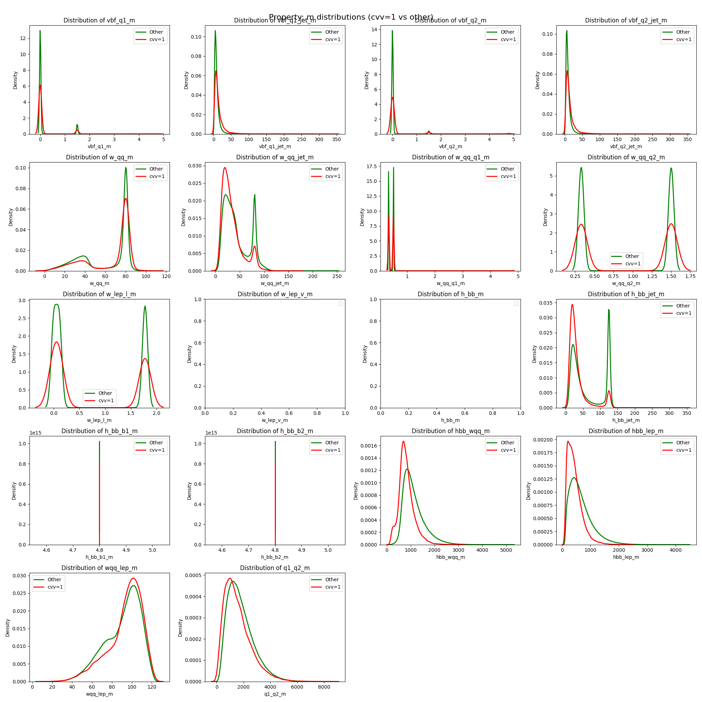
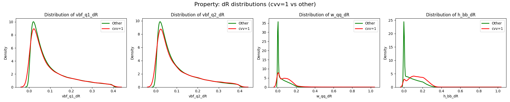

Abstract
This project studies the binary classification of VBF Higgs-pair production events in the semileptonic channel HH → bbqqℓν, with the goal of determining whether a matched, truth-level event representation contains enough information to distinguish the Standard Model coupling point at κ2V = 1 from all other coupling values.
The Standard Model sample is strongly depleted after jet matching (only 0.4% survive selection), making C1 versus Cnot 1 a genuinely difficult classification task in both data-statistics and physical terms.
We benchmark 13 ML models across a comprehensive preprocessing ablation — six scaling strategies, three normalization strategies, and three sampling strategies — and include a DeepSets model that classifies sets of events simultaneously. The best single-event model (MLP) reaches 78.6% accuracy. DeepSets with ten events per set reaches 99.1%, showing the coupling signal becomes far clearer with multiple events.
Physics Context
VBF Higgs-pair production is a rare process predicted by the Standard Model whose rate is
highly sensitive to the quartic coupling constant κ2V
(the cvv parameter). Since VBF HH production has not yet been observed, measuring
or constraining κ2V requires ML-assisted discrimination of events produced at the
SM point (cvv = 1) from events produced at anomalous coupling values.
We study the semileptonic decay channel HH → bb WW* → bb qq ℓν, producing two b-jets, two light jets, a charged lepton, and a neutrino. Events are processed through a full Delphes detector simulation and jet matching pipeline. The coupling scan covers cvv ∈ {0.0, 0.5, 1.0, 1.5, 2.0, 3.0}.
Class Imbalance (after matching)
| κ2V value | Class label | Matched events | Survival fraction |
|---|---|---|---|
| 0.0 | C0.0 | ~98 000 | ~13% |
| 0.5 | C0.5 | ~79 000 | ~17% |
| 1.0 (SM) | C1 | ~3 400 | 0.4% |
| 1.5 | C1.5 | ~82 000 | ~10% |
| 2.0 | C2.0 | ~140 000 | ~18% |
| 3.0 | C3.0 | ~120 000 | ~21% |
Because all non-SM classes are nearly indistinguishable from each other (5-class accuracy ≈ 20%, equal to random guessing), the task is reduced to the binary problem: C1 vs. Cnot 1.
Dataset & Features
Each event is described by kinematic four-vector observables of the reconstructed physics objects, grouped by their role in the topology. In total 53 features are used (after dropping azimuthal angles and some jet-level duplicates that provide no discriminating power).
Kinematics of the two forward tagging jets (pT, η, m, E, ΔR, jet-level).
System momentum and individual quark daughters from the W → qq decay.
Charged lepton and neutrino four-vector components.
Jet-level and b-jet daughter kinematics of the Higgs decaying to b-quarks.
Derived quantities built from multiple objects: HH mass, ΔR distances, invariant masses.



Feature Distributions
Per-class distributions (C1 in red, Cnot1 in green) across all feature groups reveal the discriminating structure of the dataset.




Models
All classical ML models are implemented with scikit-learn and run through the same config-driven framework. The PyTorch MLP uses residual connections, batch normalisation, and optional SE blocks. DeepSets operates on sets of events.
Best MLP Architecture (256 → 128 → 64)
The best-performing MLP uses a progressively shrinking funnel topology with three hidden layers and ReLU activations, trained with Adam (lr = 5×10−4), batch size 256, L2 regularisation (α = 0.002), and early stopping (patience 20, max 1000 epochs).
DeepSets
DeepSets classifies a set of N events simultaneously. Each event is encoded independently, then aggregated (via max pooling, attention pooling, or self-attention) before a final classifier head. Because more events provide more coupling signal, accuracy increases sharply with set size.
| Set size N | Accuracy | Precision | Recall |
|---|---|---|---|
| 1 | 77.58% | 77.57% | 77.56% |
| 2 | 86.09% | 85.22% | 85.21% |
| 3 | 90.27% | 90.48% | 90.47% |
| 5 | 95.51% | 95.28% | 95.28% |
| 10 | 99.11% | 98.82% | 98.82% |
Note: DeepSets with N > 1 has access to more information per prediction; the comparison with single-event models is not directly fair, but demonstrates that the coupling signal becomes much clearer when multiple events are considered together.
Results
Best Configuration per Method
After sweeping all preprocessing combinations, the best configuration per model is summarised below. Standard scaling and 3× oversampling of the minority class are the most common winning settings.
| Method | Best Accuracy | Best Sampling | Best Scaling |
|---|---|---|---|
| MLP Classifier | 78.64% | 3× Oversample | STD |
| Gradient Boosting | 77.88% | Undersampled | STD |
| HistGradient Boosting | 77.84% | Undersampled | STD |
| Random Forest | 77.57% | 3× Oversample | STD |
| Polynomial LR | 77.62% | 3× Oversample | STD+L2 |
| DeepSet | 77.58% | Single Event | STD |
| Nystroem-SGD | 77.53% | 3× Oversample | Yeo-Johnson |
| Voting Classifier | 77.32% | Undersampled | STD |
| Logistic Regression | 77.01% | 3× Oversample | MaxAbs |
| LDA | 76.46% | 3× Oversample | STD+Max |
| SGD Classifier | 76.67% | 3× Oversample | STD+L2 |
| Bagging Classifier | 76.44% | Undersampled | STD |
| Gaussian NB | 73.95% | 3× Oversample | Quantile |
Key Findings
When all models are tuned to their best settings they end up performing at surprisingly similar accuracy levels (73–79%). This suggests the difficulty lies in the data itself rather than the choice of model — the dataset does not contain enough clear signal to let any single model pull far ahead.
Ensemble voting does not improve over the best individual model because all models agree on the same predictions (both correct and incorrect), confirming they all rely on the same feature structure. High pairwise agreement (≥ 92% for MLP + GBT) leaves no room for diversification.
Preprocessing Takeaways
| Dimension | Winner | Key observation |
|---|---|---|
| Scaling | Standard (STD) | Safe default; most models insensitive to scaling choice |
| Normalisation | None (no row-norm) | Only Gaussian NB benefits; others unaffected or hurt |
| Sampling | 3× oversampling | Good balance; undersampling also competitive; 10× hurts |
| Features | All features | Combination features add ~1.7% for some models |
Framework
All experiments are driven by JSON configuration files. A single config defines datasources, normalization strategies, methods, and output paths. The runner automatically sweeps all combinations and saves results, models, and plots.
Quick Start
# Install
pip install -e .
# Run an ablation experiment
python -m ml_framework.core.runner --config configs/ablation/all_std.json
# Aggregate results
python scripts/aggregate_results.py --results-dir results/ablation/my_experiment
# Plot summary
python scripts/plot_summary.py --input results/ablation/my_experiment/aggregated_results.csvConfig Reference (key fields)
| Field | Type | Description |
|---|---|---|
datasource[].data_path | String | Path to the combined CSV dataset |
datasource[].balance_train | String | "oversample" or "undersample" |
datasource[].oversample_factor | Float | Multiplier relative to minority class size |
datasource[].merge_classes | Array | Group coupling values into macro-classes |
normalization[].scaling | String | standard / minmax / maxabs / robust / yeo-johnson / quantile_* |
methods | Array | List of registered classifier names to train |
method_n_jobs | Int | Parallel threads per method |
save_models | Bool | Persist trained models to disk |
Conclusion & Outlook
This study demonstrates that binary discrimination of VBF HH events at the Standard Model coupling point from all other coupling values is achievable with classical ML, but is genuinely difficult due to extreme class imbalance and limited signal in single-event representations.
Standard scaling and 3× minority oversampling form a robust preprocessing baseline. Adding combination features (derived multi-object quantities) gives small but consistent improvements. No ensemble combination outperforms the best individual model, confirming that all methods exploit the same feature correlations.
The most striking result is from DeepSets: classifying sets of 10 events simultaneously reaches 99.1% accuracy, compared to 77.6% for a single event. This suggests that while the coupling signal in a single event is weak, it becomes highly statistically significant when integrated over multiple events — exactly the situation in a real experimental analysis.
Limitations & Future Work
All results are based on truth-level simulation without detector effects. No held-out test set was used; all reported numbers come from the validation split. Future work could apply the framework to detector-level data, use larger datasets, or investigate whether the strong DeepSets results hold under more realistic experimental conditions.